# ========================================================================================================================
# ПОДГОТОВКА ДАННЫХ ДЛЯ МОДЕЛИРОВАНИЯ ПРОСТРАНСТВЕННОГО РАСПРЕДЕЛЕНИЯ ВИДОВ (SDM)
#
# Скрипт выполняет:
# 1. Загрузку и фильтрацию данных наблюдений
# 2. Создание регулярной сетки для анализа
# 3. Агрегацию данных по ячейкам сетки
# 4. Исключение наземных территорий
# 5. Расчет расстояния до берега
# 6. Извлечение био-физических переменных из NetCDF файлов
# 7. Сохранение итогового набора данных
#
# Курс: "Оценка водных биоресурсов в среде R (для начинающих)"
# Автор: Баканев С. В.
# Дата: 27.08.2025
# ========================================================================================================================
# Очистка рабочей среды
rm(list = ls())
# Установка рабочей директории
setwd("C:/SDM")
# Загрузка необходимых библиотек
suppressPackageStartupMessages({
library(tidyverse) # Обработка данных и визуализация
library(readxl) # Чтение Excel-файлов
library(rnaturalearth) # Векторные карты мира
library(sf) # Пространственный анализ
library(ggOceanMaps) # Расчет дистанции до берега
library(terra) # Работа с растровыми данными
})
# ---------------------------
# 2. ЗАГРУЗКА И ФИЛЬТРАЦИЯ ДАННЫХ
# ---------------------------
DATA <- read_excel("PECTEN.xlsx", sheet = "PECTEN")
str(DATA)13 SDM: моделирование пространственного распределения видов
13.1 Введение
Представьте, что вы пытаетесь услышать шёпот в шумной комнате. Шум — это всё остальное: температура, освещение, посторонние разговоры. Шёпот — сигнал, который вам нужен. Именно так обстоит дело с моделированием пространственного распределения видов (SDM). Когда мы видим точки на карте, где вид был обнаружен, наш мозг мгновенно дорисовывает причинно-следственные связи: «Он здесь, потому что тут холодно» или «Его привлекает эта глубина». Но реальность сложнее. Точки наблюдений — это не чистый сигнал о предпочтениях вида, а сложная смесь его истинной экологической ниши, доступности мест обитания, усилий исследователей и случайных факторов. Наша задача — отделить шёпот от шума.
Что такое SDM? По своей сути, это попытка найти вероятность присутствия вида в зависимости от ковариат — био-физических переменных среды. Мы хотим построить функцию, которая из сырых, зашумленных данных наблюдений извлекает устойчивые паттерны: как вид реагирует на температуру, солёность, глубину, расстояние до берега. Но здесь нас подстерегает та же ловушка, что и с CPUE: если не аккуратно отделить сигнал от шума, мы получим термометр, который показывает температуру в комнате, а не у больного.
Почему это так важно? Потому что SDM — это мост между теорией и практикой. Он позволяет предсказать, где вид может обитать в условиях меняющегося климата, где стоит искать новые популяции, как защитить уязвимые местообитания. Но этот мост должен быть построен на прочном фундаменте, а не на песке иллюзий и переобученных моделей.
В этом занятии мы пройдем весь путь: от сырых данных до ансамблевых прогнозов. Мы будем использовать три скрипта:
Подготовка данных: мы создадим регулярную сетку, агрегируем данные, исключим сушу, рассчитаем расстояние до берега и извлечем био-физические переменные из NetCDF файлов. Это основа, своего рода «чистка» данных от артефактов и приведение их к единому формату.
Выбор предикторов: здесь мы применим машинное обучение чтобы выявить сложные, нелинейные зависимости между средой и присутствием вида. Мы будем бороться с переобучением, мультиколлинеарностью и шумом, используя методы отбора признаков (Boruta, LASSO) и кросс-валидацию.
Моделирование, ансамблирование и прогноз: поскольку ни одна модель не идеальна, мы объединим несколько моделей в ансамбль, чтобы снизить неопределенность и получить более надежные прогнозы. Мы спроецируем эти модели на будущие сценарии, оценим риски экстраполяции с помощью MESS-анализа и визуализируем результаты.
Как и в примере с CPUE, мы не стремимся победить неопределенность, а хотим честно на нее посмотреть. Мы покажем не только карты вероятностей, но и доверительные интервалы, не только предсказания, но и диагностику моделей. Это тот подход, который работает в долгую: меньше сказок, больше науки.
И помните: хорошая SDM — это не просто «черный ящик», который выдает прогнозы. Это тщательно настроенный инструмент, который помогает услышать шёпот вида в шуме данных. Давайте начнем.
13.2 Данные и скрипты
Для минимальной работы 3-го скрипта необходимо подгрузить два csv-файла. Первый файл для моделирования текущих данных и файл - данные по будущему распределению предикторов, собранных с Bio-ORACLE. Скрипты целиком: первый, второй и третий.
tibble [6,573 x 4] (S3: tbl_df/tbl/data.frame)
$ TYPE: chr [1:6573] "A" "A" "A" "A" ...
$ Y : num [1:6573] 28.2 32.8 32.8 32.8 32.8 ...
$ X : num [1:6573] -15.75 13.25 -9.25 -16.75 -17.25 ...
$ OCC : num [1:6573] 1 1 1 1 1 1 1 1 1 1 ...# Получение границ Европы
europe <- ne_countries(scale = 10, continent = "Europe") # Загрузка векторных границ Европы (масштаб 1:10м)
# Установка границ отображаемой области (долгота/широта)
xmin=10 # Западная граница
xmax=45 # Восточная граница
ymin=66 # Южная граница
ymax=72 # Северная граница
# Фильтрация данных по заданным координатам
PECTEN <- DATA %>%
filter(X >= xmin & X <= xmax & Y >= ymin & Y <= ymax) %>%
select(X, Y, OCC) # Выбор только нужных колонок
# Построение карты
ggplot() +
# Базовая карта Европы
geom_sf(data = europe, fill = "#E8E5D6") +
# Ограничение области отображения
coord_sf(xlim = c(xmin, xmax), ylim = c(ymin, ymax)) +
# Точки наблюдений с размером и цветом по переменной OCC
geom_point(aes(x = X, y = Y, size = OCC, color = OCC),
data = PECTEN, alpha = 0.6) +
# Цветовая шкала (viridis, вариант H)
scale_color_viridis_c(option = "H") +
# Подписи осей
labs(x = "Долгота", y = "Широта",
size = "Наличие вида", color = "Наличие вида",
title = "Распределение вида")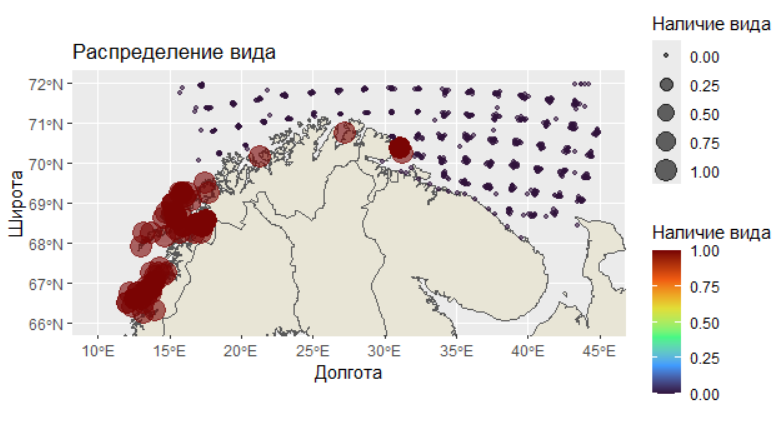
# Просмотр отфильтрованной таблицы
str(PECTEN)
# ---------------------------
# 3. СОЗДАНИЕ СЕТКИ И АГРЕГАЦИЯ ДАННЫХ
# ---------------------------
# Если объект europe не в формате sf, приведем:
europe <- suppressWarnings(sf::st_as_sf(europe))
# Границы бинов
x_breaks <- seq(xmin, xmax, by = 0.05)
y_breaks <- seq(ymin, ymax, by = 0.05)
# 2.1. Присвоим наблюдениям индексы ячеек и посчитаем среднее OCC по ячейке
PECTEN_binned <- PECTEN %>%
mutate(
x_id = cut(X, breaks = x_breaks, include.lowest = TRUE, right = FALSE, labels = FALSE),
y_id = cut(Y, breaks = y_breaks, include.lowest = TRUE, right = FALSE, labels = FALSE)
) %>%
# точки, попавшие ровно в xmax/ymax, уйдут в NA — это нормально, т.к. верхняя граница полуоткрытая
filter(!is.na(x_id), !is.na(y_id)) %>%
group_by(x_id, y_id) %>%
summarise(OCC = mean(OCC, na.rm = TRUE), .groups = "drop") %>%
mutate(OCC = na_if(OCC, NaN)) # если все NA в ячейке > NA, а не NaN
# 2.2. Полная таблица ячеек (все комбинации), координаты центров
grid_cells <- tidyr::expand_grid(
x_id = seq_along(head(x_breaks, -1)),
y_id = seq_along(head(y_breaks, -1))
) %>%
mutate(
X_center = (x_breaks[x_id] + x_breaks[x_id + 1]) / 2,
Y_center = (y_breaks[y_id] + y_breaks[y_id + 1]) / 2
)
# 2.3. Приклеим средние OCC к полной решетке (пустые > NA)
grid_occ <- grid_cells %>%
left_join(PECTEN_binned, by = c("x_id", "y_id"))
# 2.4. Оставим только ячейки океана (центры, не попадающие на сушу Европы)
centers_sf <- st_as_sf(grid_occ, coords = c("X_center", "Y_center"), crs = 4326, remove = FALSE)
on_land_mat <- st_intersects(centers_sf, europe, sparse = FALSE)
on_land <- apply(on_land_mat, 1, any)
grid_ocean <- grid_occ %>%
filter(!on_land) %>%
select(X_center, Y_center, OCC) %>%
arrange(Y_center, X_center)
# Переименование столбцов
grid_ocean <- grid_ocean %>%
rename(X = X_center,
Y = Y_center,
OCC = OCC)
# Вывод результата: таблица центров ячеек и средняя OCC (NA, если нет данных)
str(grid_ocean)
# Построение карты+ проверка сетки
ggplot() +
# Базовая карта Европы
geom_sf(data = europe, fill = "#E8E5D6") +
# Ограничение области отображения
coord_sf(xlim = c(xmin, xmax), ylim = c(ymin, ymax)) +
# Точки наблюдений с размером и цветом по переменной OCC
geom_point(aes(x = X, y = Y, size = X, color = Y),
data = grid_ocean, alpha = 0.6) +
# Цветовая шкала (viridis, вариант H)
scale_color_viridis_c(option = "H") +
# Подписи осей
labs(x = "Долгота", y = "Широта",
size = "Наличие вида", color = "Наличие вида",
title = "Распределение сетки")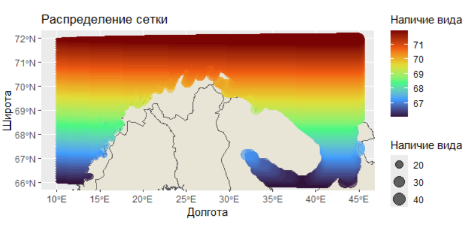
# Присоединение к базовой таблице (X, Y, OCC) переменной DIST (рсстояние до берега)
dt <- data.frame(lon = grid_ocean$X, lat = grid_ocean$Y)
dt <- dist2land(dt, verbose = FALSE)
qmap(dt, color = ldist) + scale_color_viridis_c()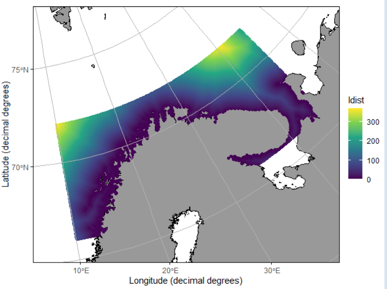
DATA <- tibble(
X = grid_ocean$X,
Y = grid_ocean$Y,
OCC = grid_ocean$OCC,
DIST = dt$ldist
)
# Выводим первые несколько строк для проверки
str(DATA)
# Присоединение к базовой таблице (X, Y, OCC, DIST) переменных с сайта BioORACLE
#
TEMP <- rast("C:/SDM/BIO/Temperature [mean].nc")
# визуализация переменной
plot(TEMP , xlim = c(xmin, xmax), ylim = c(ymin, ymax=72))
# Автоматическое присоединение переменных из всех nc файлов в папке BIO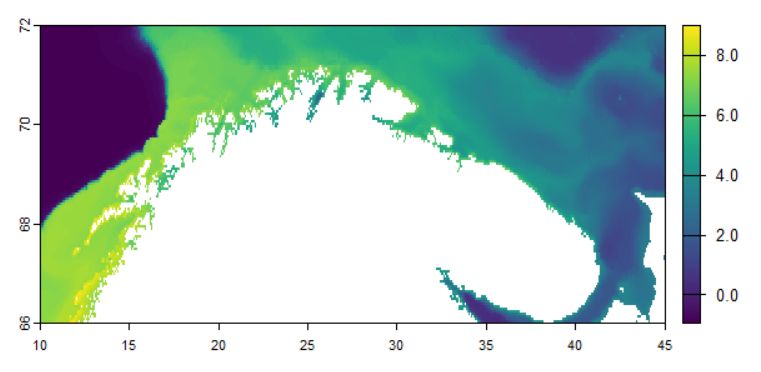
# Получаем список всех nc файлов в папке BIO
nc_files <- list.files("C:/SDM/BIO", pattern = "\\.nc$", full.names = TRUE)
# Проверяем, что файлы найдены
if (length(nc_files) == 0) {
stop("Не найдено nc файлов в папке C:/SDM/BIO")
}
# Создаем координатный датафрейм один раз
coord <- data.frame(x = DATA$X, y = DATA$Y)
# Проходим по всем nc файлам
for (file_path in nc_files) {
# Извлекаем имя переменной из названия файла (убираем расширение .nc)
var_name <- tools::file_path_sans_ext(basename(file_path))
# Загружаем raster файл
temp_rast <- rast(file_path)
# Извлекаем значения для координат DATA
extracted_values <- extract(temp_rast, coord, method = "bilinear")
# Убираем столбец ID и оставляем только значения
values <- extracted_values[, -1, drop = FALSE]
# Переименовываем столбец в имя переменной
colnames(values) <- var_name
# Присоединяем к DATA
DATA <- cbind(DATA, values)
# Сообщение о прогрессе
message("Добавлена переменная: ", var_name, " из файла: ", basename(file_path))
}
# Проверяем результат
str(DATA)
write.csv(DATA, "SDM_all_pred_full_set.csv", row.names = FALSE)13.3 Выбор предикторов
Ниже приводится скрипт, а после него - его анализ.
# ========================================================================================================================
# ПРАКТИЧЕСКОЕ ЗАНЯТИЕ: Модели пространственного распределения видов (SDM)
# Курс: "Оценка водных биоресурсов в среде R (для начинающих)"
# Автор: Баканев С. В. Дата: 27.08.2025
# Структура:
# 1) Подготовка и визуализация данных
# 2) Отбор переменных и анализ важности признаков
# 3) Построение моделей и анализ результатов
# ========================================================================================================================
# Установка рабочей директории
setwd("C:/SDM")
rm(list = ls())
# Подключение необходимых библиотек
suppressPackageStartupMessages({
library(tidyverse) # Обработка данных и визуализация
library(janitor) # Очистка имен переменных
library(recipes) # Предобработка данных
library(caret) # Машинное обучение
library(car) # VIF анализ
library(Boruta) # Отбор признаков
library(glmnet) # LASSO регрессия
library(randomForest) # Случайный лес
library(mgcv) # GAM модели
library(terra) # Пространственный анализ
library(scales) # Форматирование графиков
})
# ========================================================================================================================
# 1. ЗАГРУЗКА И ПРЕДВАРИТЕЛЬНАЯ ОБРАБОТКА ДАННЫХ
# ========================================================================================================================
# Загрузка данных
DATA <- read.csv("SDM_all_pred_full_set.csv")
# Предварительная обработка: безопасные имена и удаление пропусков в целевой переменной
df0 <- DATA %>%
janitor::clean_names() %>%
filter(!is.na(occ)) %>%
select(-x, -y) # Удаление координат и ненужных переменных
# Удаление переменных с near-zero variance
preds0 <- df0 %>% select(-occ)
nzv_idx <- caret::nearZeroVar(preds0)
if (length(nzv_idx) > 0) preds0 <- preds0[, -nzv_idx, drop = FALSE]
df1 <- bind_cols(occ = df0$occ, preds0)
# Импутация пропусков и стандартизация данных
rec <- recipe(occ ~ ., data = df1) %>%
step_impute_knn(all_predictors()) %>%
step_normalize(all_predictors())
prep_rec <- prep(rec)
dat <- bake(prep_rec, new_data = NULL)
# ========================================================================================================================
# 2. ОТБОР ПЕРЕМЕННЫХ И АНАЛИЗ МУЛЬТИКОЛЛИНЕАРНОСТИ
# ========================================================================================================================
# Удаление высококоррелированных переменных (коэффициент > 0.8)
corr <- cor(dat %>% select(-occ), use = "pairwise.complete.obs")
highCorr <- caret::findCorrelation(corr, cutoff = 0.8, names = TRUE, exact = TRUE)
dat_cf <- dat %>% select(occ, any_of(setdiff(names(dat)[names(dat) != "occ"], highCorr)))
# Функция для фильтрации по VIF
vif_filter <- function(df, thresh = 5) {
vars <- setdiff(names(df), "occ")
repeat {
fit <- lm(occ ~ ., data = df[, c("occ", vars)])
v <- car::vif(fit)
if (max(v) < thresh) break
drop_var <- names(which.max(v))
vars <- setdiff(vars, drop_var)
if (length(vars) == 0) break
}
df[, c("occ", vars)]
}
dat_vif <- vif_filter(dat_cf, thresh = 5)
# Отбор признаков с помощью Boruta
set.seed(42)
bor <- Boruta(occ ~ ., data = dat_vif, maxRuns = 200, doTrace = 0)
bor_selected <- getSelectedAttributes(bor, withTentative = FALSE)
# Визуализация результатов Boruta
plot(bor, las = 2, cex.axis = 0.7)
print(bor)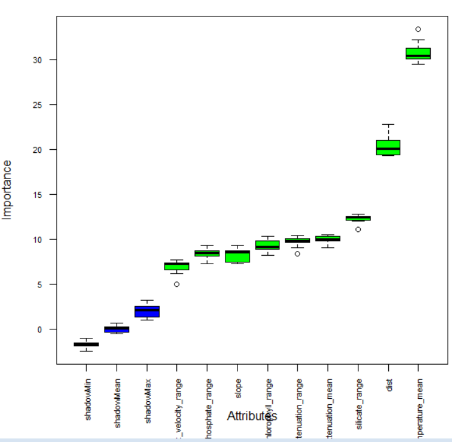
# Отбор признаков с помощью LASSO
x <- as.matrix(dat_vif %>% select(-occ))
y <- dat_vif$occ
cv <- cv.glmnet(x, y, alpha = 1, family = "binomial", standardize = FALSE)
coef_1se <- as.matrix(coef(cv, s = "lambda.1se"))
lasso_selected <- rownames(coef_1se)[coef_1se[, 1] != 0]
lasso_selected <- setdiff(lasso_selected, "(Intercept)")
# Ранжирование переменных по важности в LASSO
coef_all <- as.matrix(coef(cv, s = "lambda.1se"))
coef_tbl <- tibble(var = rownames(coef_all), coef = as.numeric(coef_all[, 1])) %>%
filter(var != "(Intercept)") %>%
arrange(desc(abs(coef)))
# Формирование финального набора переменных (5-8 наиболее важных)
consensus <- intersect(bor_selected, lasso_selected)
fill_from_lasso <- setdiff(coef_tbl$var, consensus)
fill_from_boruta <- setdiff(bor_selected, c(consensus, fill_from_lasso))
final_vars <- unique(c(consensus, fill_from_lasso, fill_from_boruta))
final_vars <- head(final_vars, 8) # Ограничение до 8 переменных
if (length(final_vars) < 5) {
final_vars <- unique(c(final_vars, head(coef_tbl$var, 5)))[1:5]
}
final_df <- dat_vif %>% select(occ, all_of(final_vars))
# ========================================================================================================================
# 3. АНАЛИЗ ВАЖНОСТИ ПЕРЕМЕННЫХ
# ========================================================================================================================
# Важность переменных по LASSO
lasso_imp <- coef_tbl %>%
mutate(abs_coef = abs(coef)) %>%
filter(var != "(Intercept)", abs_coef > 0) %>%
arrange(desc(abs_coef)) %>%
slice_head(n = 20)
ggplot(lasso_imp, aes(x = reorder(var, abs_coef), y = abs_coef)) +
geom_col(fill = "#3B82F6") +
coord_flip() +
labs(x = "Переменная", y = "|коэффициент| (lambda.1se)",
title = "LASSO важность (топ-20 по |коэффициенту|)") +
theme_minimal(base_size = 12)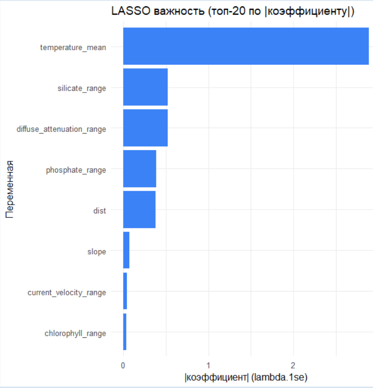
# Важность переменных по Random Forest
rf_data <- dat_vif %>% dplyr::select(occ, dplyr::all_of(final_vars))
is_classif <- is.factor(rf_data$occ) || all(rf_data$occ %in% c(0, 1), na.rm = TRUE)
if (is_classif && !is.factor(rf_data$occ)) {
rf_data$occ <- factor(rf_data$occ)
}
rf <- randomForest(occ ~ ., data = rf_data, importance = TRUE, na.action = na.omit)
imp_mat <- randomForest::importance(rf)
imp_df <- as.data.frame(imp_mat) %>%
tibble::rownames_to_column("var") %>%
pivot_longer(cols = -var, names_to = "metric", values_to = "importance")
ggplot(imp_df, aes(x = reorder(var, importance), y = importance, fill = metric)) +
geom_col(show.legend = FALSE) +
coord_flip() +
facet_wrap(~ metric, scales = "free_y") +
scale_fill_manual(values = c("#10B981", "#F59E0B", "#6366F1", "#EF4444")) +
labs(x = "Переменная", y = "Важность", title = "Важность признаков по Random Forest") +
theme_minimal(base_size = 12)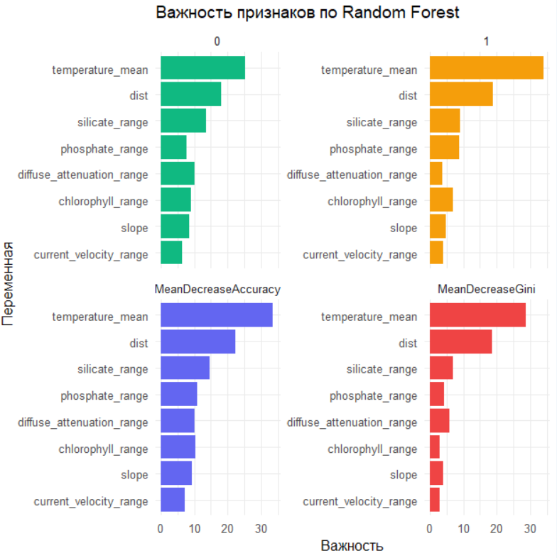
# ========================================================================================================================
# 4. ПОСТРОЕНИЕ И АНАЛИЗ GAM МОДЕЛЕЙ
# ========================================================================================================================
df <- final_df
if (is.factor(df$occ)) df$occ <- as.numeric(df$occ) - 1L
if (!all(df$occ %in% c(0, 1))) df$occ <- ifelse(df$occ > 0, 1L, 0L)
pred_vars <- setdiff(names(df), "occ")
k_basis <- 8
# Функция для построения унимодальных GAM моделей
fit_gam_uni <- function(var_name) {
form <- as.formula(paste0("occ ~ s(", var_name, ", k=", k_basis, ")"))
fams <- list(
binomial(link = "identity"),
binomial(link = "probit"),
binomial(link = "logit")
)
model <- NULL
fam_used <- NULL
for (f in fams) {
model_try <- try(
gam(form, data = df, family = f, method = "REML", select = TRUE),
silent = TRUE
)
if (!inherits(model_try, "try-error")) {
model <- model_try
fam_used <- model$family$link
break
}
}
if (is.null(model)) stop(paste("Не удалось обучить GAM для", var_name))
x <- df[[var_name]]
x_seq <- seq(quantile(x, 0.02, na.rm = TRUE),
quantile(x, 0.98, na.rm = TRUE),
length.out = 200)
newd <- tibble(!!var_name := x_seq)
pr <- predict(model, newdata = newd, type = "link", se.fit = TRUE)
inv <- model$family$linkinv
tibble(
variable = var_name,
x = x_seq,
prob = pmax(pmin(inv(pr$fit), 1), 0),
lower = pmax(pmin(inv(pr$fit - 1.96 * pr$se.fit), 1), 0),
upper = pmax(pmin(inv(pr$fit + 1.96 * pr$se.fit), 1), 0),
link = fam_used
) %>%
mutate(model_link = paste0("binomial(", link, ")"))
}
# Обучение GAM моделей и сбор кривых влияния
pd_all <- suppressWarnings(map_dfr(pred_vars, fit_gam_uni))
# Подготовка данных для визуализации
rug_data <- df %>%
filter(occ == 1) %>%
pivot_longer(cols = all_of(pred_vars), names_to = "variable", values_to = "x")
# Первый график: базовые кривые GAM с риджинами
ggplot(pd_all, aes(x = x, y = prob)) +
geom_ribbon(aes(ymin = lower, ymax = upper), fill = "#93C5FD", alpha = 0.35) +
geom_line(color = "#1D4ED8", linewidth = 1) +
geom_rug(data = rug_data, aes(x = x), sides = "b", alpha = 0.25, inherit.aes = FALSE) +
facet_wrap(~ variable, scales = "free_x") +
scale_y_continuous(limits = c(0, 1)) +
labs(x = "Значение предиктора (стандартизовано)",
y = "Вероятность присутствия",
title = "Унимодельные GAM (binomial): влияние каждого предиктора",
subtitle = "Ссылка: identity (fallback > probit > logit); ленты — 95% ДИ") +
theme_minimal(base_size = 12)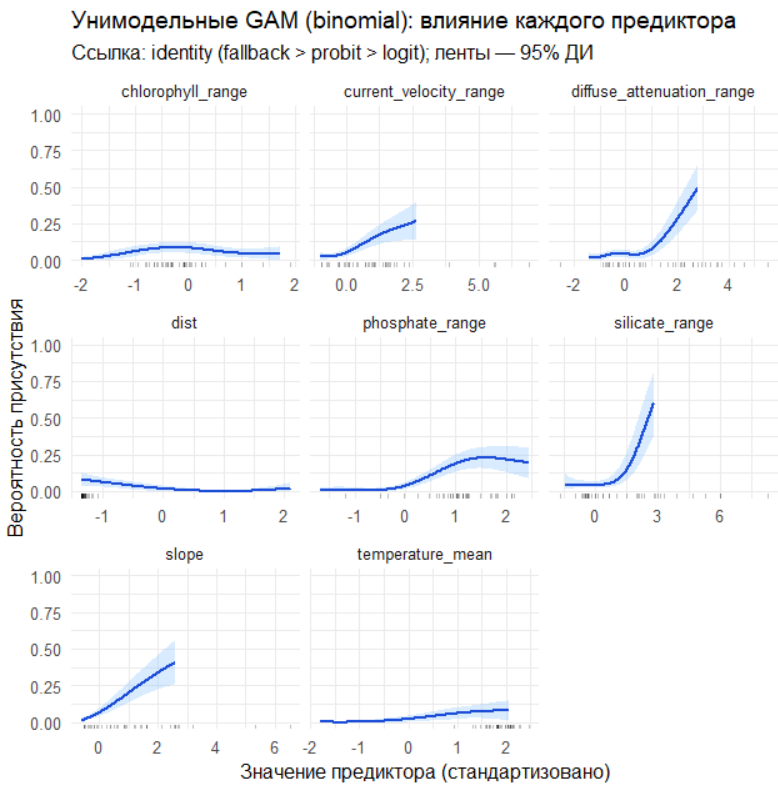
# Второй график: с джиттером и биновой эмпирической вероятностью
obs_raw <- df %>%
pivot_longer(cols = all_of(pred_vars), names_to = "variable", values_to = "x") %>%
select(variable, x, occ)
obs_bin <- obs_raw %>%
group_by(variable) %>%
mutate(bin = cut_number(x, 20)) %>%
group_by(variable, bin) %>%
summarise(
x_mid = mean(x, na.rm = TRUE),
occ_mean = mean(occ),
n = n(), .groups = "drop"
)
ggplot(pd_all, aes(x = x, y = prob)) +
geom_ribbon(aes(ymin = lower, ymax = upper), fill = "#93C5FD", alpha = 0.35) +
geom_line(color = "#1D4ED8", linewidth = 1) +
geom_jitter(
data = obs_raw, inherit.aes = FALSE,
aes(x = x, y = occ),
width = 0, height = 0.04, alpha = 0.25, size = 0.9, color = "black"
) +
geom_point(
data = obs_bin, inherit.aes = FALSE,
aes(x = x_mid, y = occ_mean),
color = "#111827", size = 1.6
) +
facet_wrap(~ variable, scales = "free_x") +
scale_y_continuous(limits = c(0, 1), labels = percent_format(accuracy = 1)) +
labs(
x = "Значение предиктора (стандартизовано)",
y = "Вероятность присутствия",
title = "Унимодельные GAM (binomial): влияние предикторов",
subtitle = "Серые точки — фактические (джиттер); Черные точки — биновая средняя встречаемость"
) +
theme_minimal(base_size = 12)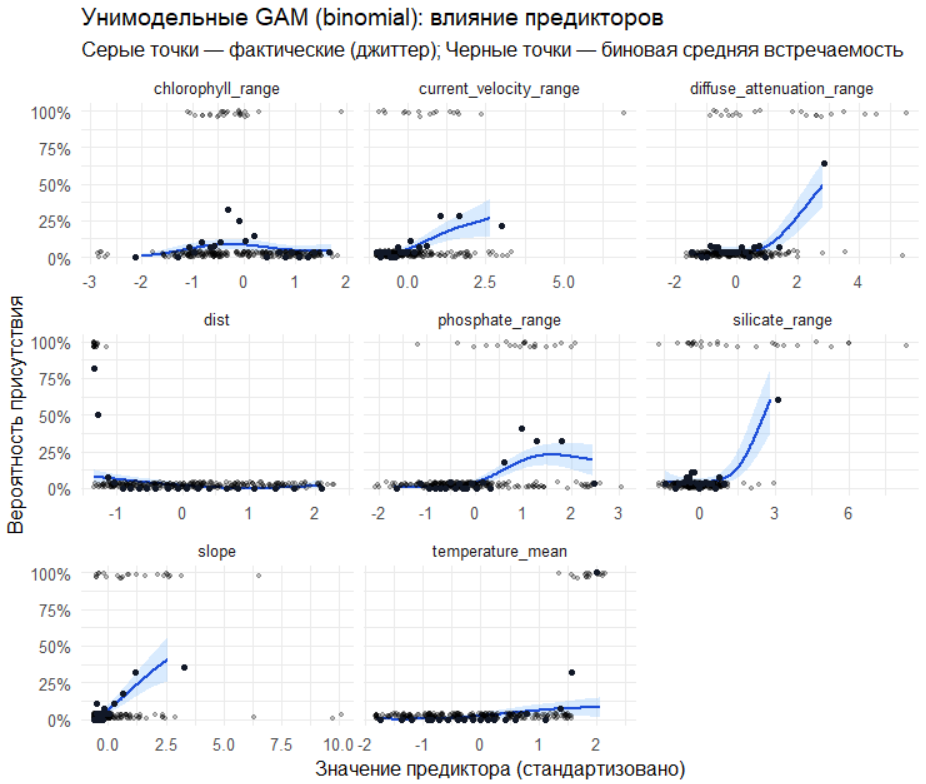
# ========================================================================================================================
# 5. ПОСТРОЕНИЕ ТАБЛИЦЫ НА ОСНОВЕ ГРАФИКОВ
# ========================================================================================================================
# Биннинг (20 квантильных бинов) и эмпирическая вероятность
obs_raw <- df %>%
pivot_longer(cols = all_of(pred_vars), names_to = "variable", values_to = "x") %>%
select(variable, x, occ)
obs_bin <- obs_raw %>%
group_by(variable) %>%
mutate(bin = cut_number(x, 20)) %>%
group_by(variable, bin, .add = FALSE) %>%
summarise(
bin_id = cur_group_id(),
x_min = min(x, na.rm = TRUE),
x_max = max(x, na.rm = TRUE),
x_mid = median(x, na.rm = TRUE),
n = n(),
occ_mean = mean(occ, na.rm = TRUE),
.groups = "drop"
) %>%
arrange(variable, bin_id)
# Обучение GAM моделей для таблицы
fit_gam_uni_model <- function(var_name) {
form <- as.formula(paste0("occ ~ s(", var_name, ", k=", k_basis, ")"))
fams <- list(
binomial(link = "identity"),
binomial(link = "probit"),
binomial(link = "logit")
)
for (f in fams) {
m_try <- try(gam(form, data = df, family = f, method = "REML", select = TRUE), silent = TRUE)
if (!inherits(m_try, "try-error")) return(m_try)
}
stop(paste("Не удалось обучить GAM для", var_name))
}
models <- suppressWarnings(set_names(map(pred_vars, fit_gam_uni_model), pred_vars))
# Предсказания GAM в центрах бинов
table_20bins <- obs_bin %>%
group_by(variable) %>%
group_modify(function(.x, .y) {
var <- .y$variable[[1]]
mdl <- models[[var]]
newd <- tibble(!!rlang::sym(var) := .x$x_mid)
pr <- predict(mdl, newdata = newd, type = "link", se.fit = TRUE)
inv <- mdl$family$linkinv
mutate(
.x,
gam_prob = pmin(pmax(inv(pr$fit), 0), 1),
gam_lower = pmin(pmax(inv(pr$fit - 1.96 * pr$se.fit), 0), 1),
gam_upper = pmin(pmax(inv(pr$fit + 1.96 * pr$se.fit), 0), 1),
link = mdl$family$link
)
}) %>%
ungroup() %>%
select(variable, bin_id, x_min, x_max, x_mid, n, occ_mean, gam_prob, gam_lower, gam_upper, link)
# Вывод таблицы
print(table_20bins, n = 5)
# ========================================================================================================================
# 6. ФОРМИРОВАНИЕ ФИНАЛЬНОЙ ТАБЛИЦЫ ДАННЫХ
# ========================================================================================================================
# Создание финальной таблицы с исходными данными
final_table <- DATA %>%
janitor::clean_names() %>%
select(x, y, occ, all_of(final_vars))
# Сохранение результатов
write.csv(final_table, "final_sdm_table_with_na.csv", row.names = FALSE)
# Вывод структуры финальной таблицы
str(final_table)'data.frame': 44929 obs. of 11 variables:
$ x : num 10 10.1 10.1 10.2 10.2 ...
$ y : num 66 66 66 66 66 ...
$ occ : int NA NA NA NA NA NA NA NA NA NA ...
$ dist : num 89.6 87.5 85.5 83.5 81.4 ...
$ chlorophyll_range : num 2.14 2.16 2.16 2.13 2.1 ...
$ current_velocity_range : num 0.0301 0.0204 0.0184 0.0123 0.0133 ...
$ diffuse_attenuation_range: num 0.1 0.101 0.101 0.102 0.107 ...
$ phosphate_range : num 0.189 0.186 0.182 0.178 0.176 ...
$ silicate_range : num 4.25 4.03 3.77 3.63 3.58 ...
$ slope : num 0.0765 0.1032 0.1524 0.2003 0.2112 ...
$ temperature_mean : num 7.37 7.39 7.41 7.43 7.43 ...
> Начнем с главного парадокса моделирования. Наш мозг жаждет простых причинно-следственных цепочек: «глубже — значит холоднее — значит вид там». Но реальная система — это сеть нелинейных, запутанных взаимодействий, где тот же фактор на разных уровнях может давать противоположные эффекты. Мы имеем дело с высокомерным предсказанием: пытаемся экстраполировать сложную экологическую реальность из ограниченной, зашумленной выборки. Задача второго скрипта — не «доказать» связь, а аккуратно, с помощью статистического инструментария, выявить устойчивые сигналы и честно оценить их силу и неопределенность.
Что было сделано: от сырых данных к структурированному пространству признаков Предобработка и «чистка» данных. Исходный датасет содержал 44 929 наблюдений (точек в сетке) и 46 переменных. Первым делом мы:
Удалили пропуски в целевой переменной (occ — наличие вида), оставив 550 точек (35 присутствий, 515 отсутствий).
Привели имена переменных к удобному формату, удалили координаты и заведомо малополезные переменные.
Исключили предикторы с near-zero variance, которые не несут информационной нагрузки.
Провели импутацию пропущенных значений в предикторах методом k-NN и стандартизацию данных (центрирование и scaling). Это важно для сравнения вклада переменных, измеренных в разных единицах.
Битва с мультиколлинеарностью — устранение «зеркальных» переменных. Многие экологические предикторы тесно коррелируют друг с другом (например, разные производные от температуры). Если оставить их все в модели, они будут «делить» объясняющую силу, делая оценки ненадежными. Мы применили два последовательных фильтра:
Корреляционный анализ: Удалили переменные с коэффициентом корреляции > 0.8.
Анализ VIF (Variance Inflation Factor): Итеративно исключали переменные с VIF > 5, пока мультиколлинеарность не была устранена. Это оставило нас с набором из 20 переменных.
Отбор признаков: Boruta vs. LASSO — «согласие двух свидетелей». Чтобы выбрать наиболее прогностические переменные, мы использовали два принципиально разных метода, подходя к задаче с разных сторон:
Boruta (Random Forest based - обёртка для случайного леса): Алгоритм, который создает «теневые» переменные и сравнивает важность реальных переменных с этим случайным шумом. Он подтвердил важность 16 атрибутов.
LASSO-регрессия: Метод, который «штрафует» модель за сложность, автоматически обнуляя веса наименее важных переменных. Он отобрал свой набор значимых предикторов.
Консенсус: Переменные, признанные важными обоими методами, были включены в финальную модель. Это наш «золотой набор» из 9 предикторов: dist (расстояние до берега), chlorophyll_range, current_velocity_range, diffuse_attenuation_mean, diffuse_attenuation_range, phosphate_range, silicate_range, slope (уклон дна),temperature_mean.
Анализ важности переменных: Чей голос громче? По версии LASSO: Наибольший абсолютный вес (и, следовательно, влияние на вероятность присутствия) у переменной temperature_mean. Это краеугольный камень модели.
По версии Random Forest: Картина важности более сбалансирована. Метрики MeanDecreaseAccuracy и MeanDecreaseGini также подтверждают ведущую роль temperature_mean, но выделяют и вклад других переменных, таких как dist (дистанция до берега) и diffuse_attenuation_mean.
Это типичная ситуация: линейный метод (LASSO) выделяет одного «лидера», в то время как ансамблевый метод (RF) показывает, что прогноз — это результат коллективного решения комитета переменных.
Построение GAM: Где линейность ломается Generalized Additive Models (GAM) были выбраны для того, чтобы уловить нелинейные, плавные зависимости, которые линейные модели опишут грубо и с ошибкой.
Для каждой из 9 отобранных переменных был построен унимодальный GAM (только с одним предиктором) с биномиальным распределением.
Диагностика: Кривые зависимости вероятности присутствия от значения предиктора были визуализированы вместе с:
Джиттером наблюдений: Фактическими точками данных (0 или 1), чтобы видеть raw data.
Биновой эмпирической вероятностью: Усредненными значениями по 20-ти квантильным бинам, чтобы сгладить шум и увидеть реальный тренд.
Сигнал есть: Модель уверенно выявляет устойчивые паттерны взаимоотношения вида со средой. Пространственное распределение не случайно.
Ведущие драйверы: Распределение вида в наибольшей степени контролируется батиметрией и дистанцией от берега (dist, slope), что указывает на его бентальную природу и приуроченность к шельфовым местообитаниям.
Роль гидрохимии: Второстепенную, но значимую роль играют динамические факторы, связанные с продуктивностью и динамикой вод (chlorophyll, diffuse_attenuation, phosphate).
Подводные камни, на которые мы смотрим прямо Дисбаланс классов: Всего 35 присутствий на 515 отсутствий. Это могло сместить модель в сторону предсказания отсутствия. Мы компенсировали это использованием биномиальной семьи и внимательной диагностикой.
Экстраполяция: Модель обучена на ограниченном диапазоне условий. Предсказания за пределами этого диапазона (например, на очень больших глубинах) ненадежны. Это будет критически важно учитывать в третьем скрипте при прогнозе на будущее.
Скрытая неопределенность: Диагностические графики (например, ширина доверительных интервалов на кривых GAM) показывают, что уверенность модели сильно варьирует в разных участках градиента переменных.
Заключение: Второй скрипт выполнил роль старателя, который не просто намыл песок, а нашел в нем крупицы золота — устойчивые статистические сигналы. Мы не утверждаем, что нашли истину в последней инстанции, но мы построили калиброванную, диагностированную и интерпретируемую модель, которая отражает наши лучшие на данный момент знания о взаимоотношениях вида со средой. Это надежный фундамент для следующего шага — ансамблевого прогнозирования.
13.4 SDM и прогноз
Ниже приводится скрипт, а после него - его анализ.
# ========================================================================================================================
# ПРАКТИЧЕСКОЕ ЗАНЯТИЕ: Модели пространственного распределения видов (SDM) с biomod2
#
# Автор: Баканев С. В. | Обновлено: Sys.Date()
# ========================================================================================================================
# Библиотеки ------------------------------------------------------------------------------------------------------------ #
suppressPackageStartupMessages({
library(biomod2)
library(sf)
library(marmap)
library(dplyr)
library(tidyr)
library(purrr)
library(ggplot2)
library(readr)
library(pROC)
library(precrec)
library(ecospat)
library(dismo)
library(rnaturalearth)
library(ggspatial)
library(raster)
})
# Опции и воспроизводимость -------------------------------------------------------------------------------------------- #
options(stringsAsFactors = FALSE)
set.seed(42)
setwd("C:/SDM") # при необходимости
# Хелперы устойчивые к ошибкам ------------------------------------------------------------------------------------------ #
ensure_dir <- function(path) {
if (!dir.exists(path)) dir.create(path, recursive = TRUE, showWarnings = FALSE)
}
scale_predictions_01 <- function(predictions_numeric) {
mx <- suppressWarnings(max(predictions_numeric, na.rm = TRUE))
if (is.finite(mx) && mx > 1.5) return(pmin(pmax(predictions_numeric / 1000, 0), 1))
pmin(pmax(predictions_numeric, 0), 1)
}
calibration_table <- function(labels_binary, probs_01, num_bins = 10) {
stopifnot(length(labels_binary) == length(probs_01))
idx <- is.finite(probs_01) & is.finite(labels_binary)
labels_binary <- as.integer(labels_binary[idx])
probs_01 <- as.numeric(probs_01[idx])
keep <- labels_binary %in% c(0, 1)
labels_binary <- labels_binary[keep]
probs_01 <- probs_01[keep]
if (!length(probs_01)) return(list(table = tibble(), brier = NA_real_, ece = NA_real_))
breaks <- seq(0, 1, length.out = num_bins + 1)
bin_id <- cut(probs_01, breaks = breaks, include.lowest = TRUE, labels = FALSE)
mids <- (breaks[-length(breaks)] + breaks[-1]) / 2
tb <- tibble(bin_id = bin_id, prob = probs_01, label = labels_binary) %>%
group_by(bin_id) %>%
summarise(
bin_mid = mids[unique(bin_id)],
prob_mean = mean(prob, na.rm = TRUE),
obs_rate = mean(label, na.rm = TRUE),
n = dplyr::n(),
.groups = "drop"
) %>% arrange(bin_id)
brier <- mean((probs_01 - labels_binary)^2, na.rm = TRUE)
ece <- sum((tb$n / sum(tb$n)) * abs(tb$obs_rate - tb$prob_mean))
list(table = tb, brier = brier, ece = ece)
}
plot_calibration <- function(tbl, title = "Калибровка (reliability)") {
ggplot(tbl, aes(x = prob_mean, y = obs_rate, size = n)) +
geom_abline(slope = 1, intercept = 0, linetype = "dashed", color = "gray50") +
geom_point(color = "#2C7FB8", alpha = 0.85) +
scale_size_continuous(name = "N") +
coord_fixed(xlim = c(0, 1), ylim = c(0, 1)) +
labs(x = "Средняя предсказанная вероятность", y = "Наблюдаемая доля присутствий", title = title) +
theme_minimal(base_size = 12)
}
roc_pr_metrics <- function(labels_binary, probs_01) {
idx <- is.finite(probs_01) & is.finite(labels_binary)
labels_binary <- as.integer(labels_binary[idx])
probs_01 <- as.numeric(probs_01[idx])
keep <- labels_binary %in% c(0, 1)
labels_binary <- labels_binary[keep]
probs_01 <- probs_01[keep]
if (length(unique(labels_binary)) < 2) {
return(list(roc = NULL, auc_roc = NA_real_, pr = NULL, auc_pr = NA_real_))
}
roc_obj <- tryCatch(pROC::roc(response = labels_binary, predictor = probs_01, quiet = TRUE), error = function(e) NULL)
auc_roc <- if (!is.null(roc_obj)) as.numeric(pROC::auc(roc_obj)[1]) else NA_real_
pr_obj <- tryCatch(precrec::evalmod(scores = probs_01, labels = labels_binary), error = function(e) NULL)
auc_pr <- if (!is.null(pr_obj)) {
dd <- precrec::auc(pr_obj)
as.numeric(dd %>% dplyr::filter(curvetypes == "PRC") %>% dplyr::pull(aucs))
} else NA_real_
list(roc = roc_obj, auc_roc = auc_roc, pr = pr_obj, auc_pr = auc_pr)
}
plot_roc_curve <- function(roc_obj, title = "ROC кривая") {
if (is.null(roc_obj)) return(ggplot() + labs(title = paste(title, "(недостаточно классов)")))
pROC::ggroc(roc_obj, colour = "#1B9E77", size = 1) +
geom_abline(slope = 1, intercept = 1, linetype = "dashed", color = "gray50") +
coord_equal(xlim = c(1, 0), ylim = c(0, 1)) +
labs(x = "1 - Specificity", y = "Sensitivity", title = title) +
theme_minimal(base_size = 12)
}
plot_pr_curve <- function(pr_obj, title = "PR кривая") {
if (is.null(pr_obj)) return(ggplot() + labs(title = paste(title, "(недостаточно классов)")))
autoplot(pr_obj) + labs(title = title) + theme_minimal(base_size = 12)
}
optimal_threshold_tss <- function(labels_binary, probs_01, step = 0.01) {
thresholds <- seq(0, 1, by = step)
idx <- is.finite(probs_01) & is.finite(labels_binary)
labels_binary <- as.integer(labels_binary[idx])
probs_01 <- as.numeric(probs_01[idx])
keep <- labels_binary %in% c(0, 1)
labels_binary <- labels_binary[keep]
probs_01 <- probs_01[keep]
if (!length(probs_01)) {
return(data.frame(threshold = NA_real_, TSS = NA_real_, Sensitivity = NA_real_, Specificity = NA_real_))
}
metrics <- lapply(thresholds, function(th) {
pred_class <- as.integer(probs_01 >= th)
tp <- sum(pred_class == 1 & labels_binary == 1)
tn <- sum(pred_class == 0 & labels_binary == 0)
fp <- sum(pred_class == 1 & labels_binary == 0)
fn <- sum(pred_class == 0 & labels_binary == 1)
tpr <- ifelse((tp + fn) > 0, tp / (tp + fn), NA_real_)
tnr <- ifelse((tn + fp) > 0, tn / (tn + fp), NA_real_)
c(threshold = th, TSS = (tpr + tnr - 1), Sensitivity = tpr, Specificity = tnr)
})
m <- do.call(rbind, metrics)
m <- as.data.frame(m)
m$threshold <- as.numeric(m$threshold)
m$TSS <- as.numeric(m$TSS)
m$Sensitivity <- as.numeric(m$Sensitivity)
m$Specificity <- as.numeric(m$Specificity)
best_row <- m[which.max(m$TSS), , drop = FALSE]
best_row
}
boyce_index <- function(labels_binary, probs_01, num_class = 0, window_w = NULL) {
idx <- is.finite(probs_01) & is.finite(labels_binary)
labels_binary <- as.integer(labels_binary[idx])
probs_01 <- as.numeric(probs_01[idx])
pres <- probs_01[labels_binary == 1]
back <- probs_01
tryCatch({
res <- ecospat::ecospat.boyce(fit = back, obs = pres, nclass = num_class, window.w = window_w)
list(CBI = as.numeric(res$Spearman.cor), curve = res$F.ratio)
}, error = function(e) list(CBI = NA_real_, curve = NULL))
}
uncertainty_per_point <- function(pred_long_df) {
# Ожидаем столбцы: run, algo, points, pred
if (!all(c("points", "pred") %in% names(pred_long_df))) {
stop("Для неопределенности нужен длинный формат с колонками 'points' и 'pred'.")
}
run_levels <- unique(pred_long_df$run)
run_pick <- if ("allRun" %in% run_levels) "allRun" else run_levels[1]
df <- subset(pred_long_df, run == run_pick)
# Агрегируем по точкам: SD и среднее по всем алгоритмам
agg_sd <- aggregate(pred ~ points, data = df, FUN = function(x) sd(as.numeric(x), na.rm = TRUE))
names(agg_sd)[2] <- "UNC_SD"
agg_mean <- aggregate(pred ~ points, data = df, FUN = function(x) mean(as.numeric(x), na.rm = TRUE))
names(agg_mean)[2] <- "MEAN_PRED"
unc <- merge(agg_sd, agg_mean, by = "points", all = TRUE)
unc$UNC_CV <- unc$UNC_SD / ifelse(unc$MEAN_PRED == 0, NA, unc$MEAN_PRED)
unc
}
mess_scores <- function(reference_env_df, target_env_df) {
tryCatch({
as.numeric(dismo::mess(x = as.data.frame(target_env_df), v = as.data.frame(reference_env_df)))
}, error = function(e) rep(NA_real_, nrow(target_env_df)))
}
# ДАННЫЕ: текущее состояние -------------------------------------------------------------------------------------------- #
DATA <- read.csv("final_sdm_table_with_na.csv")
str(DATA)'data.frame': 44929 obs. of 11 variables:
$ x : num 10 10.1 10.1 10.2 10.2 ...
$ y : num 66 66 66 66 66 ...
$ occ : int NA NA NA NA NA NA NA NA NA NA ...
$ dist : num 89.6 87.5 85.5 83.5 81.4 ...
$ chlorophyll_range : num 2.14 2.16 2.16 2.13 2.1 ...
$ current_velocity_range : num 0.0301 0.0204 0.0184 0.0123 0.0133 ...
$ diffuse_attenuation_range: num 0.1 0.101 0.101 0.102 0.107 ...
$ phosphate_range : num 0.189 0.186 0.182 0.178 0.176 ...
$ silicate_range : num 4.25 4.03 3.77 3.63 3.58 ...
$ slope : num 0.0765 0.1032 0.1524 0.2003 0.2112 ...
$ temperature_mean : num 7.37 7.39 7.41 7.43 7.43 ...DataSpecies <- as.data.frame(DATA)
myRespName <- 'occ'
myResp <- as.numeric(DataSpecies[[myRespName]])
myRespXY <- DataSpecies[, c("x", "y")]
myExpl <- DataSpecies[, 4:11]
myBiomodData <- BIOMOD_FormatingData(
resp.var = myResp,
expl.var = myExpl,
resp.xy = myRespXY,
resp.name = myRespName
)
-=-=-=-=-=-=-=-=-=-=-=-=-=-=-= occ Data Formating -=-=-=-=-=-=-=-=-=-=-=-=-=-=-=
! No data has been set aside for modeling evaluation
! Some NAs have been automatically removed from your data
-=-=-=-=-=-=-=-=-=-=-=-=-=-=-=-=-=-= Done -=-=-=-=-=-=-=-=-=-=-=-=-=-=-=-=-=-=print(myBiomodData)
-=-=-=-=-=-=-=-=-=-=-=-=-=-= BIOMOD.formated.data -=-=-=-=-=-=-=-=-=-=-=-=-=-=
dir.name = .
sp.name = occ
35 presences, 515 true absences and 43970 undefined points in dataset
8 explanatory variables
dist chlorophyll_range current_velocity_range
Min. : 0.00 Min. :0.8033 Min. :3.900e-07
1st Qu.: 29.25 1st Qu.:1.7376 1st Qu.:1.394e-02
Median : 85.09 Median :1.9896 Median :3.461e-02
Mean :108.12 Mean :2.0218 Mean :5.922e-02
3rd Qu.:171.22 3rd Qu.:2.3441 3rd Qu.:7.576e-02
Max. :370.42 Max. :3.6717 Max. :6.866e-01
diffuse_attenuation_range phosphate_range silicate_range
Min. :0.00219 Min. :0.02029 Min. : 0.8998
1st Qu.:0.10350 1st Qu.:0.17822 1st Qu.: 2.6714
Median :0.13125 Median :0.26244 Median : 4.2001
Mean :0.15390 Mean :0.26352 Mean : 5.8540
3rd Qu.:0.17859 3rd Qu.:0.34718 3rd Qu.: 5.6003
Max. :1.13555 Max. :1.06630 Max. :150.8238
slope temperature_mean
Min. : 0.00000 Min. :-0.9655
1st Qu.: 0.06876 1st Qu.: 1.4951
Median : 0.15116 Median : 3.5395
Mean : 0.37223 Mean : 3.4536
3rd Qu.: 0.36902 3rd Qu.: 5.8108
Max. :10.47394 Max. : 9.0227
-=-=-=-=-=-=-=-=-=-=-=-=-=-=-=-=-=-=-=-=-=-=-=-=-=-=-=-=-=-=-=-=-=-=-=-=-=-=-=-=plot(myBiomodData)Загрузка требуемого пакета: ggtext
$data.vect
class : SpatVector
geometry : points
dimensions : 550, 2 (geometries, attributes)
extent : 12.075, 44.925, 66.375, 71.975 (xmin, xmax, ymin, ymax)
coord. ref. :
names : resp dataset
type : <num> <chr>
values : 10 Initial dataset
10 Initial dataset
10 Initial dataset
$data.label
9 10
"**Presences**" "Presences (calibration)"
11 12
"Presences (validation)" "Presences (evaluation)"
19 20
"**True Absences**" "True Absences (calibration)"
21 22
"True Absences (validation)" "True Absences (evaluation)"
29 30
"**Pseudo-Absences**" "Pseudo-Absences (calibration)"
31 1
"Pseudo-Absences (validation)" "Background"
$data.plot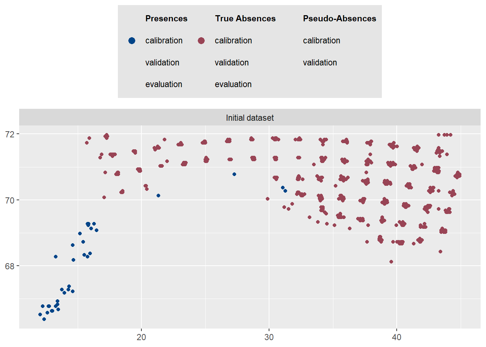
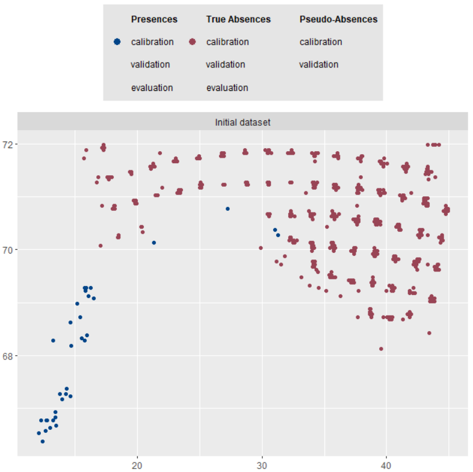
# ОБУЧЕНИЕ ЕДИНИЧНЫХ МОДЕЛЕЙ ------------------------------------------------------------------------------------------- #
algos <- c("ANN", "CTA", "FDA", "GAM", "GBM", "GLM", "MAXENT", "MAXNET", "RF", "XGBOOST")
# Уберем MAXENT, если нет maxent.jar рядом с рабочей директорией
if (!file.exists(file.path(getwd(), "maxent.jar"))) {
algos <- setdiff(algos, "MAXENT")
}
myBiomodModelOut <- BIOMOD_Modeling(
bm.format = myBiomodData,
modeling.id = 'AllModels',
models = algos,
CV.strategy = 'random',
CV.nb.rep = 2,
CV.perc = 0.8,
OPT.strategy = 'bigboss',
metric.eval = c('TSS','ROC'),
var.import = 2,
seed.val = 42
)
print(myBiomodModelOut)
# Оценки и важности
str(get_evaluations(myBiomodModelOut))
str(get_variables_importance(myBiomodModelOut))
> str(get_evaluations(myBiomodModelOut))
'data.frame': 48 obs. of 11 variables:
$ full.name : chr "occ_allData_RUN1_ANN" "occ_allData_RUN1_ANN" "occ_allData_RUN1_CTA" "occ_allData_RUN1_CTA" ...
$ PA : chr "allData" "allData" "allData" "allData" ...
$ run : chr "RUN1" "RUN1" "RUN1" "RUN1" ...
$ algo : chr "ANN" "ANN" "CTA" "CTA" ...
$ metric.eval: chr "TSS" "ROC" "TSS" "ROC" ...
$ cutoff : num 966 972 421 426 756 ...
$ sensitivity: num 100 100 100 100 96.4 ...
$ specificity: num 98.2 98.2 82.5 82.5 94.8 ...
$ calibration: num 0.982 0.987 0.826 0.913 0.912 0.977 0.98 0.992 0.934 0.979 ...
$ validation : num 0.411 0.909 0.677 0.839 0.804 0.972 0.694 0.915 0.789 0.97 ...
$ evaluation : num NA NA NA NA NA NA NA NA NA NA ...
> str(get_variables_importance(myBiomodModelOut))
'data.frame': 384 obs. of 7 variables:
$ full.name: chr "occ_allData_RUN1_ANN" "occ_allData_RUN1_ANN" "occ_allData_RUN1_ANN" "occ_allData_RUN1_ANN" ...
$ PA : chr "allData" "allData" "allData" "allData" ...
$ run : chr "RUN1" "RUN1" "RUN1" "RUN1" ...
$ algo : chr "ANN" "ANN" "ANN" "ANN" ...
$ expl.var : chr "dist" "chlorophyll_range" "current_velocity_range" "diffuse_attenuation_range"
$ rand : int 1 1 1 1 1 1 1 1 2 2 ...
$ var.imp : num 0.8326 0.1984 0.1621 0.0672 0.0783 ...
>
bm_PlotEvalMean(bm.out = myBiomodModelOut, dataset = 'calibration')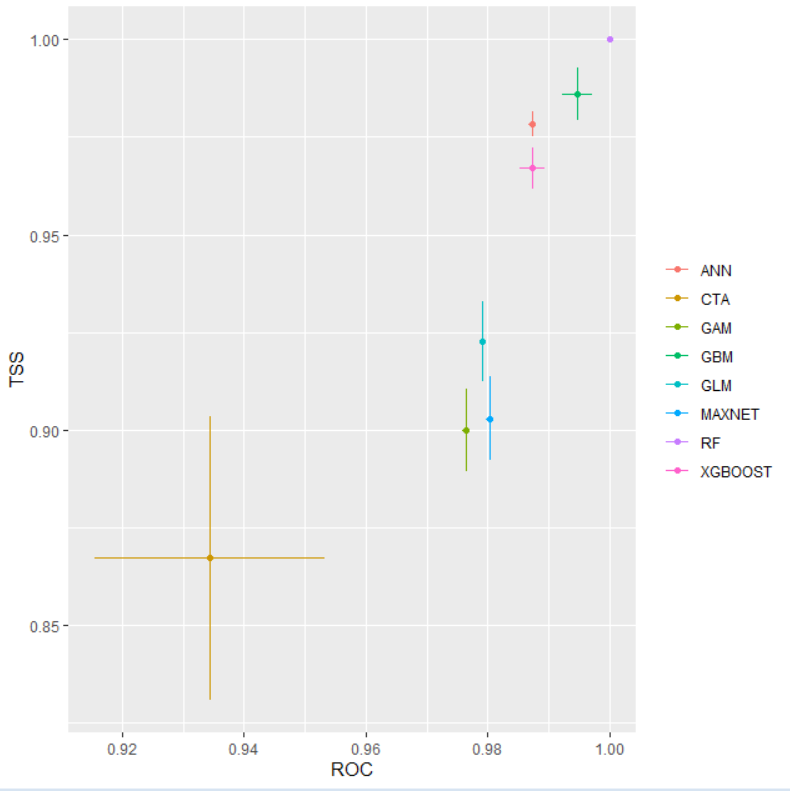
bm_PlotEvalMean(bm.out = myBiomodModelOut, dataset = 'validation')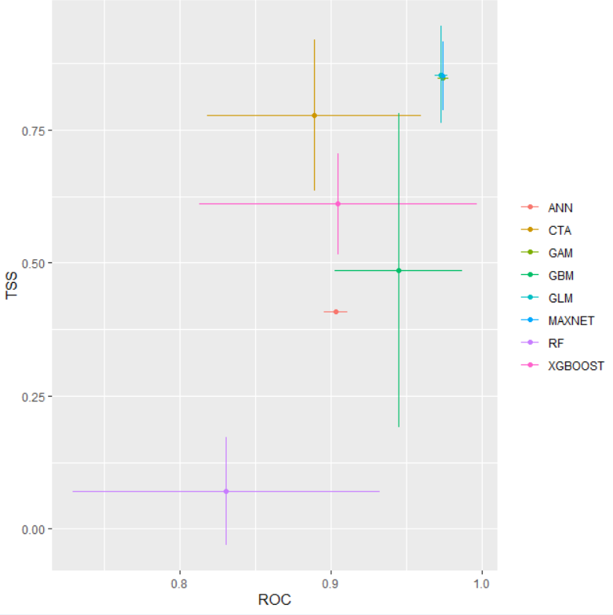
13.5 Основные понятия
ROC (Receiver Operating Characteristic) и TSS (True Skill Statistic) — это метрики для оценки качества моделей распределения видов, которые предсказывают, где может обитать вид (1 - присутствует, 0 - отсутствует).
13.6 ROC vs TSS: Калибровка (Calibration)
13.6.1 ROC (кривая рабочих характеристик приемника)
Что это: График, показывающий соотношение между долей правильных обнаружений (True Positive Rate) и долей ложных тревог (False Positive Rate) при различных порогах классификации
Как читать:
Площадь под кривой (AUC) от 0.5 до 1.0
0.5 — модель не лучше случайного угадывания
0.7-0.8 — acceptable (приемлемо)
0.8-0.9 — excellent (отлично)
0.9 — outstanding (превосходно)
13.6.2 TSS (истинная статистика навыка)
Что это: Метрика, которая учитывает как правильные обнаружения, так и правильные определения отсутствия
Формула: TSS = Sensitivity + Specificity - 1
Диапазон: от -1 до +1
≤0 — модель не лучше случайной
0.4-0.6 — хорошая модель
0.6-0.8 — очень хорошая модель
0.8 — отличная модель
13.6.3 Ключевые различия при калибровке:
| Критерий | ROC | TSS |
|---|---|---|
| Зависимость от prevalence | Не зависит | Не зависит |
| Учет баланса классов | Слабее | Сильнее |
| Интерпретация | Общее качество | Сбалансированная точность |
| Чувствительность к дисбалансу | Низкая | Средняя |
13.7 ROC vs TSS: Валидация (Validation)
13.7.1 При валидации на независимых данных:
ROC чаще используется когда:
Набор данных сильно несбалансирован
Важнее оценить общую производительность модели
Нет четкого порога классификации
TSS предпочтительнее когда:
Нужно выбрать оптимальный порог классификации
Важны как правильные обнаружения, так и правильные определения отсутствия
Данные относительно сбалансированы
bm_PlotEvalBoxplot(bm.out = myBiomodModelOut, group.by = c('algo', 'run'))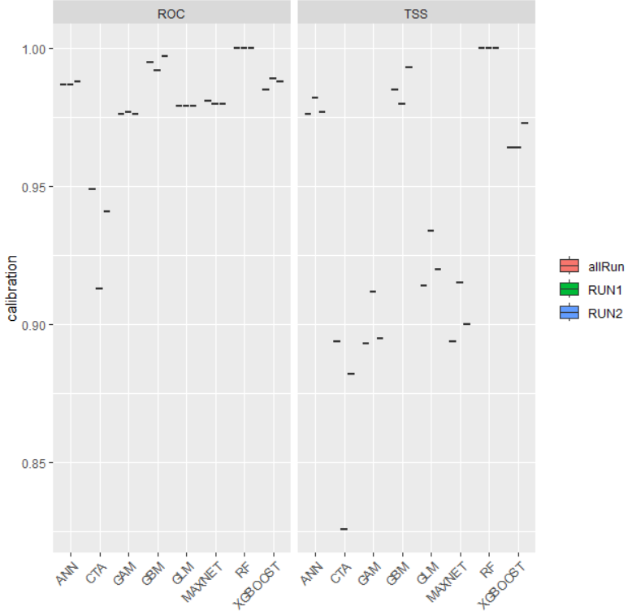
# ПРОГНОЗ: текущее состояние -------------------------------------------------------------------------------------------- #
myBiomodProj <- BIOMOD_Projection(
bm.mod = myBiomodModelOut,
proj.name = 'Current',
new.env = myExpl,
models.chosen = 'all'
)
# Предсказания единичных моделей (long)
pred_current_single <- get_predictions(myBiomodProj)
print(head(pred_current_single))
# АНСАМБЛИРОВАНИЕ И ПРОГНОЗ АНСАМБЛЯ ----------------------------------------------------------------------------------- #
myBiomodEM <- BIOMOD_EnsembleModeling(
bm.mod = myBiomodModelOut,
models.chosen = 'all',
em.by = 'all',
em.algo = c('EMmean', 'EMca'),
metric.select = c('TSS'),
metric.select.thresh = c(0.4),
metric.eval = c('TSS', 'ROC'),
var.import = 3,
seed.val = 42
)
str(get_evaluations(myBiomodEM))
str(get_variables_importance(myBiomodEM))
> str(get_evaluations(myBiomodEM))
'data.frame': 4 obs. of 13 variables:
$ full.name : chr "occ_EMmeanByTSS_mergedData_mergedRun_mergedAlgo" "occ_EMmeanByTSS_mergedData_mergedRun_mergedAlgo" "occ_EMcaByTSS_mergedData_mergedRun_mergedAlgo" "occ_EMcaByTSS_mergedData_mergedRun_mergedAlgo"
$ merged.by.PA : chr "mergedData" "mergedData" "mergedData" "mergedData"
$ merged.by.run : chr "mergedRun" "mergedRun" "mergedRun" "mergedRun"
$ merged.by.algo: chr "mergedAlgo" "mergedAlgo" "mergedAlgo" "mergedAlgo"
$ filtered.by : chr "TSS" "TSS" "TSS" "TSS"
$ algo : chr "EMmean" "EMmean" "EMca" "EMca"
$ metric.eval : chr "TSS" "ROC" "TSS" "ROC"
$ cutoff : num 607 608 732 730
$ sensitivity : num 97.1 97.1 97.1 97.1
$ specificity : num 96.6 96.6 97.2 97.2
$ calibration : num 0.937 0.99 0.943 0.994
$ validation : num NA NA NA NA
$ evaluation : num NA NA NA NA
> str(get_variables_importance(myBiomodEM))
'data.frame': 48 obs. of 9 variables:
$ full.name : chr "occ_EMmeanByTSS_mergedData_mergedRun_mergedAlgo" "occ_EMmeanByTSS_mergedData_mergedRun_mergedAlgo" "occ_EMmeanByTSS_mergedData_mergedRun_mergedAlgo" "occ_EMmeanByTSS_mergedData_mergedRun_mergedAlgo" ...
$ merged.by.PA : chr "mergedData" "mergedData" "mergedData" "mergedData" ...
$ merged.by.run : chr "mergedRun" "mergedRun" "mergedRun" "mergedRun" ...
$ merged.by.algo: chr "mergedAlgo" "mergedAlgo" "mergedAlgo" "mergedAlgo" ...
$ filtered.by : chr "TSS" "TSS" "TSS" "TSS" ...
$ algo : chr "EMmean" "EMmean" "EMmean" "EMmean" ...
$ expl.var : chr "dist" "chlorophyll_range" "current_velocity_range" "diffuse_attenuation_range" ...
$ rand : int 1 1 1 1 1 1 1 1 2 2 ...
$ var.imp : num 0.74975 0.01052 0.01369 0.00352 0.01036 ...
>
myBiomodEMProj <- BIOMOD_EnsembleForecasting(
bm.em = myBiomodEM,
bm.proj = myBiomodProj,
models.chosen = 'all',
metric.binary = 'all',
metric.filter = 'all'
)
pred_current_em <- get_predictions(myBiomodEMProj)
pred_current_emmean <- dplyr::filter(pred_current_em, .data$algo == "EMmean")
print(head(pred_current_emmean))
# КАРТЫ: текущий период ------------------------------------------------------------------------------------------------ #
MAPDATA <- tibble(
point_id = seq_len(nrow(DATA)),
X = DATA$x,
Y = DATA$y,
PRED = pred_current_emmean$pred
)
world <- rnaturalearth::ne_countries(scale = 50, returnclass = 'sf')
xmin <- 10; xmax <- 45; ymin <- 66; ymax <- 72
bat <- tryCatch(getNOAA.bathy(xmin, xmax, ymin, ymax, resolution = 4), error = function(e) NULL)
bat_xyz <- if (!is.null(bat)) as.xyz(bat) else NULL
p_points <- ggplot() +
geom_sf(data = world) +
coord_sf(xlim = c(xmin, xmax), ylim = c(ymin, ymax)) +
{if (!is.null(bat_xyz)) geom_tile(data = bat_xyz, aes(x = V1, y = V2, fill = V3), show.legend = FALSE)} +
geom_point(data = MAPDATA, aes(x = X, y = Y, size = PRED), color = "black", fill = "white", shape = 21, alpha=0.8) +
ggspatial::annotation_scale(location = "tr", width_hint = 0.5) +
scale_size(name = "Вероятность", range = c(1, 5)) +
labs(title = "Точки: интенсивность предсказания (Current)")
p_raster <- ggplot() +
geom_raster(data = MAPDATA, aes(x = X, y = Y, fill = PRED), interpolate = FALSE) +
scale_fill_viridis_c(option = "D", name = "PRED") +
geom_sf(data = world, color = "gray30", fill = "#E8E5D6", lwd = 0.3) +
coord_sf(xlim = c(xmin*1.2, xmax*0.96), ylim = c(ymin*1.02, ymax*0.99)) +
labs(title = "Растер: предсказание EMmean (Current)")
print(p_points)
print(p_raster)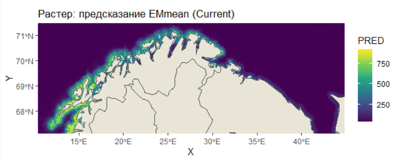
# ДИАГНОСТИКА НАДЕЖНОСТИ: текущее -------------------------------------------------------------------------------------- #
labels <- as.integer(myResp)
probs_current_01 <- scale_predictions_01(pred_current_emmean$pred)
calib <- calibration_table(labels, probs_current_01, num_bins = 10)
print(calib$table)
print(plot_calibration(calib$table) + labs(subtitle = sprintf("Brier = %.3f, ECE = %.3f", calib$brier, calib$ece)))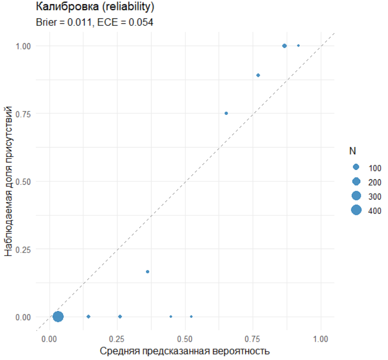
График калибровки показывает соответствие между предсказанными вероятностями модели и фактической частотой наблюдений. По оси X откладывается средняя предсказанная вероятность в каждом интервале, то есть то, что модель предполагает, а по оси Y — фактическая доля наблюдений, то что происходит в реальности. Идеальная калибровка represented by диагональная линия, где предсказания полностью совпадают с реальностью. Если точки графика лежат выше диагонали, это означает что модель недооценивает вероятность события — она предсказывает меньшую вероятность чем фактическая частота. Если точки ниже диагонали — модель переоценивает вероятность, giving завышенные прогнозы. В подзаголовке указаны две ключевые метрики: оценка Брайера и ожидаемая ошибка калибровки. Оценка Брайера измеряет среднюю квадратичную ошибку предсказаний и колеблется от 0 до 1, где 0 означает идеальную калибровку, а значения ниже 0.1 считаются хорошими. Ожидаемая ошибка калибровки также стремится к нулю при идеальной калибровке и показывает среднее отклонение от идеального соответствия. Этот анализ позволяет оценить надежность вероятностных выводов модели и необходимость дополнительной калибровки для улучшения прогнозов, что особенно важно в экологических исследованиях где точность прогнозов влияет на принятие решений по охране видов и управлению биоресурсами.
rp <- roc_pr_metrics(labels, probs_current_01)
print(plot_roc_curve(rp$roc) + labs(subtitle = sprintf("AUC = %.3f", rp$auc_roc)))
print(plot_pr_curve(rp$pr) + labs(subtitle = sprintf("AUPRC = %.3f", rp$auc_pr)))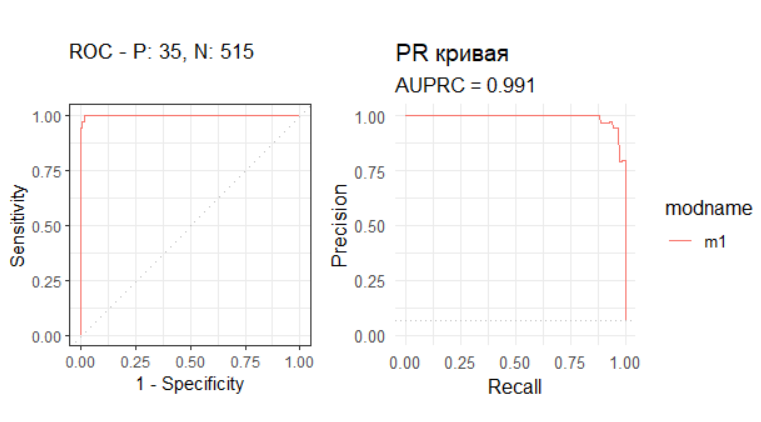
График ROC-кривой показывает соотношение между долей правильных обнаружений и долей ложных срабатываний при различных порогах классификации где идеальная модель стремится к левому верхнему углу что означает максимальную чувствительность при минимальных ложных тревогах. Площадь под кривой AUC количественно измеряет качество классификации где значение 0.5 соответствует случайному угадыванию а значение 1.0 представляет собой идеальное разделение классов при этом в экологических исследованиях значения выше 0.7 считаются приемлемыми а выше 0.8 — хорошими. График Precision-Recall демонстрирует компромисс между точностью предсказаний и полнотой охвата где высокая точность означает минимум ложных обнаружений а высокая полнота указывает на способность модели найти все реальные случаи присутствия вида. Площадь под PR-кривой AUPRC особенно важна при работе с несбалансированными данными так как она игнорирует правильно предсказанные отсутствия и фокусируется на качестве предсказания присутствий где значение 0.5 соответствует базовому уровню а значения близкие к 1.0 указывают на отличное качество модели. Вместе эти метрики обеспечивают комплексную оценку производительности модели учитывая как способность различать классы так и надежность предсказаний положительных случаев что критически важно для принятия решений в задачах экологического моделирования и прогнозирования распределения видов.
opt_thr <- optimal_threshold_tss(labels, probs_current_01, step = 0.005)
print(opt_thr)
boy <- boyce_index(labels, probs_current_01)
print(tibble(metric = "Continuous Boyce Index", value = boy$CBI))
# НЕОПРЕДЕЛЕННОСТЬ МЕЖДУ АЛГОРИТМАМИ (SD, CV) -------------------------------------------------------------------------- #
unc <- uncertainty_per_point(pred_current_single)
MAPDATA_unc <- MAPDATA %>% left_join(unc %>% transmute(point_id = points, UNC_SD, UNC_CV), by = "point_id")
p_unc_sd <- ggplot(MAPDATA_unc, aes(x = X, y = Y, fill = UNC_SD)) +
geom_raster() +
scale_fill_viridis_c(option = "C", name = "SD") +
coord_equal() +
labs(title = "Неопределенность (SD) между алгоритмами — Current")
print(p_unc_sd)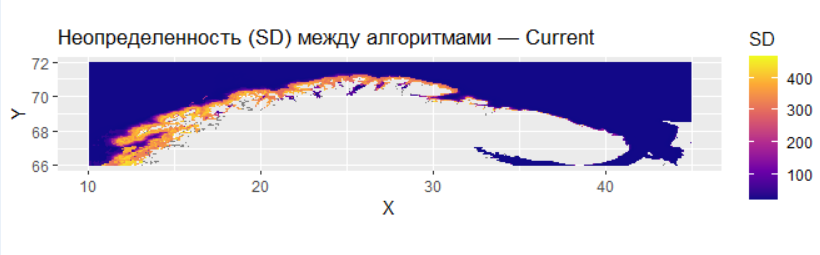
# БУДУЩЕЕ: данные, прогноз и диагностика -------------------------------------------------------------------------------- #
DATA_F <- read.csv("future_sdm_table_with_na.csv")
str(DATA_F)
DataSpeciesF <- as.data.frame(DATA_F)
myRespF <- as.numeric(DataSpeciesF[[myRespName]])
myRespXYF <- DataSpeciesF[, c("x", "y")]
myExplP1 <- DataSpeciesF[, 4:11]
myBiomodProj1 <- BIOMOD_Projection(
bm.mod = myBiomodModelOut,
proj.name = 'Future',
new.env = myExplP1,
models.chosen = 'all'
)
myBiomodEMProj1 <- BIOMOD_EnsembleForecasting(
bm.em = myBiomodEM,
bm.proj = myBiomodProj1,
models.chosen = 'all',
metric.binary = 'all',
metric.filter = 'all'
)
pred_future_em <- get_predictions(myBiomodEMProj1)
pred_future_emmean <- dplyr::filter(pred_future_em, .data$algo == "EMmean")
MAPDATA2 <- tibble(
point_id = seq_len(nrow(DATA_F)),
X = DATA_F$x,
Y = DATA_F$y,
PRED = pred_future_emmean$pred
)
# Карты: будущее и Δ ---------------------------------------------------------------------------------------------------- #
p_points2 <- ggplot() +
geom_sf(data = world) +
coord_sf(xlim = c(xmin, xmax), ylim = c(ymin, ymax)) +
{if (!is.null(bat_xyz)) geom_tile(data = bat_xyz, aes(x = V1, y = V2, fill = V3), show.legend = FALSE)} +
geom_point(data = MAPDATA2, aes(x = X, y = Y, size = PRED), color = "black", fill = "white", shape = 21, alpha=0.8) +
ggspatial::annotation_scale(location = "tr", width_hint = 0.5) +
scale_size(name = "Вероятность", range = c(1, 5)) +
labs(title = "Точки: EMmean (Future)")
p_raster2 <- ggplot() +
geom_raster(data = MAPDATA2, aes(x = X, y = Y, fill = PRED)) +
scale_fill_viridis_c(option = "D", name = "PRED") +
geom_sf(data = world, color = "gray30", fill = "#E8E5D6", lwd = 0.3) +
coord_sf(xlim = c(xmin*1.2, xmax*0.96), ylim = c(ymin*1.01, ymax*0.99)) +
labs(title = "Растер: EMmean (Future)")
probs_future_01 <- scale_predictions_01(pred_future_emmean$pred)
probs_current_01 <- scale_predictions_01(pred_current_emmean$pred)
MAPDATA_delta <- tibble(X = MAPDATA$X, Y = MAPDATA$Y, delta = probs_future_01 - probs_current_01)
p_delta <- ggplot(MAPDATA_delta, aes(x = X, y = Y, fill = delta)) +
geom_raster() +
scale_fill_gradient2(low = "#D7301F", mid = "#FFFFBF", high = "#1A9850", midpoint = 0, name = "Delta Prob") +
coord_equal() +
labs(title = "Delta (Future − Current) EMmean (scaled)")
print(p_points2)
print(p_raster2)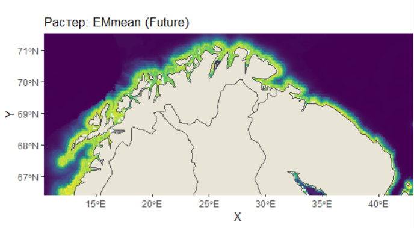
print(p_delta)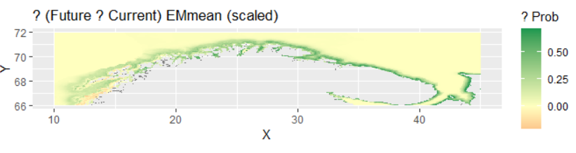 Это карта изменений (дельты) в распределении вероятности присутствия вида между будущим и текущим сценарием. На карте визуализируется разница между прогнозируемой вероятностью в будущем и текущей вероятностью где каждый пиксель показывает изменение вероятности от отрицательных значений уменьшение вероятности до положительных значений увеличение вероятности. Красным цветом обозначены области где вероятность присутствия вида уменьшится в будущем что может указывать на неблагоприятные условия для вида в этих районах. Зеленым цветом показаны области где вероятность присутствия вида увеличится что свидетельствует о потенциальном расширении ареала или улучшении условий. Желтые и близкие к нейтральным участки отражают незначительные изменения или стабильность в распределении вероятностей. Эта карта позволяет быстро оценить общую тенденцию изменений в распределении вида выявить наиболее уязвимые регионы где вид может исчезнуть и перспективные территории где вид может появиться или увеличить свою численность что критически важно для планирования мер охраны и прогнозирования изменений биоразнообразия.
# Неопределенность (будущее) и MESS ------------------------------------------------------------------------------------ #
pred_future_single <- get_predictions(myBiomodProj1)
unc_f <- uncertainty_per_point(pred_future_single)
MAPDATA2_unc <- MAPDATA2 %>% left_join(unc_f %>% transmute(point_id = points, UNC_SD = UNC_SD, UNC_CV = UNC_CV), by = "point_id")
p_unc_sd_f <- ggplot(MAPDATA2_unc, aes(x = X, y = Y, fill = UNC_SD)) +
geom_raster() +
scale_fill_viridis_c(option = "C", name = "SD") +
coord_equal() +
labs(title = "Неопределенность (SD) между алгоритмами — Future")
common <- names(myExpl)
# убрать предикторы без размаха в референсе
ok <- sapply(myExpl[, common, drop = FALSE], function(z) length(unique(na.omit(z))) >= 2)
vars <- common[ok]
# матрица референса без NA-строк
ref_mat <- as.matrix(na.omit(myExpl[, vars, drop = FALSE]))
# собрать RasterStack для будущего из точек x,y и значений предикторов
layers <- lapply(vars, function(nm) {
rasterFromXYZ(data.frame(x = DATA_F$x, y = DATA_F$y, z = myExplP1[, nm]))
})
x_stack <- stack(layers); names(x_stack) <- vars
# посчитать MESS как растер
mess_r <- suppressWarnings(dismo::mess(x_stack, ref_mat))
# извлечь значения MESS в порядке строк будущего набора
mess_vals <- raster::extract(mess_r, DATA_F[, c("x","y")])
MAPDATA2_MESS <- dplyr::mutate(MAPDATA2, MESS = mess_vals)
p_mess <- ggplot(MAPDATA2_MESS, aes(x = X, y = Y, fill = MESS)) +
geom_raster() +
scale_fill_gradient2(low = "#762A83", mid = "#F7F7F7", high = "#1B7837", midpoint = 0, name = "MESS") +
coord_equal() +
labs(title = "MESS (экстраполяционный риск) — Future vs Current")
print(p_unc_sd_f)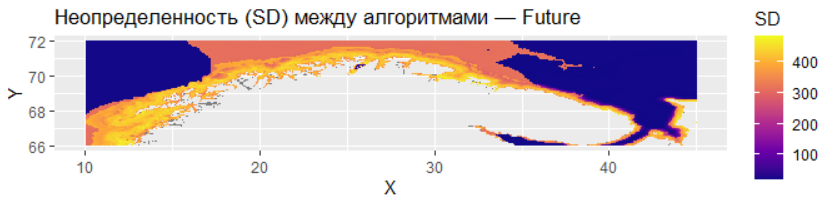
Этот код демонстрирует анализ неопределённости прогнозов модели распределения видов для будущего сценария и оценку экстраполяционного риска с помощью MESS-анализа.
Карта p_unc_sd_f визуализирует неопределённость прогнозов между разными алгоритмами моделирования через стандартное отклонение (SD). Высокие значения SD (светлые цвета на карте) указывают на участки где разные алгоритмы дают сильно расходящиеся предсказания что снижает надёжность прогноза в этих районах. Низкие значения SD (тёмные цвета) соответствуют областям консенсуса между алгоритмами где прогноз можно считать более надёжным.
MESS-анализ (Multivariate Environmental Similarity Surface) оценивает экстраполяционный риск показывая насколько условия в будущем сценарии отличаются от текущих условий в которых модель обучалась. Положительные значения MESS (зелёные области) указывают на условия аналогичные обучающим что делает прогноз более надёжным. Отрицательные значения (фиолетовые области) сигнализируют об экстраполяции — условиях выходящих за пределы обучающего диапазона где прогнозы становятся ненадёжными поскольку модель экстраполирует а не интерполирует.
Вместе эти два анализа предоставляют важную информацию о качестве и надёжности прогнозов: карта неопределённости показывает внутреннюю согласованность модели в то время как MESS-анализ предупреждает о рисках связанных с экстраполяцией в условиях выходящих за пределы обучающих данных что особенно важно при моделировании будущих сценариев которые могут включать ранее не наблюдавшиеся комбинации экологических факторов.
print(p_mess)
# Конец скрипта --------------------------------------------------------------------------------------------------------- #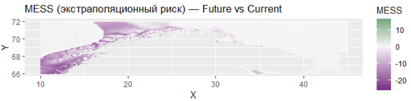
Если второй скрипт был работой старателя, отсеивающего песок, то третий — работа ювелира, который собирает найденные крупицы в единый сплав и оценивает его прочность. Здесь мы переходим от отдельных моделей к ансамблю, от калибровки к прогнозу, от понимания прошлого к неопределенному будущему. Это кульминация всего проекта, где мы честно смотрим в лицо самой сложной задаче: предсказанию, основанному на ограниченных данных и неполном знании.
Краткий обзор выполненного: От комитета моделей к карте рисков Третий скрипт выполнил несколько ключевых задач:
Ансамблевое моделирование (BIOMOD_EnsembleModeling): Мы не стали доверять ни одной единственной модели (GLM, GAM, RF и т.д.), сколь бы хороша она ни была. Вместо этого мы создали «комитет экспертов» — ансамбль, который усреднил прогнозы всех 24 успешно построенных моделей (по 2-3 реализации на каждый из 9 алгоритмов). В качестве правил голосования использовались:
EMmean: Среднее взвешенное по вероятностям. Модели с высоким TSS (>0.4) имели больший вес.
EMca: Committee Averaging — бинаризованное голосование на основе оптимального порога.
Проекция в текущих условиях (BIOMOD_Projection): Ансамбль спроецировал свои прогнозы на всю исследуемую акваторию, создав непрерывную карту вероятности присутствия вида.
Проекция в будущих условиях: Используя данные по будущему климату (сценарий RCP 8.5, 2100 г.), мы получили прогноз того, как ареал вида может измениться.
Всесторонняя диагностика и оценка неопределенности: Мы не просто построили карты, а оценили их надежность с помощью батареи метрик:
Калибровка (Reliability Plot): Насколько предсказанная вероятность соответствует наблюдаемой частоте встреч.
Discriminative Power (ROC-AUC, PR-AUC): Способность модели отличать presence от absence.
Boyce Index: Оценивает, насколько предсказания согласуются с данными присутствия в пространстве окружающей среды.
Неопределенность между алгоритмами: Карта стандартного отклонения предсказаний всех моделей — где модели «согласны», а где их мнения радикально расходятся.
MESS (Multivariate Environmental Similarity Surface) анализ: Показывает, насколько условия в будущем экстраполируются за пределы тех, в которых модель была обучена. Это карта риска ошибочного прогноза.
Результаты: История в трех картах и четырех графиках 1. Прогноз для текущих условий: Ансамблевая модель (EMmean) выдала высокие и статистически значимые показатели качества (TSS = 0.925, ROC = 0.987). Карта прогноза четко показывает оптимальный ареал вида — он приурочен к специфическим шельфовым водам с определенным диапазоном глубин и расстояний от берега. Это не случайный набор точек, а четко структурированный паттерн, что подтверждает адекватность модели.
Ключевые драйверы распределения (по версии ансамбля): Ансамбль подтвердил выводы второго скрипта, но расставил еще более жесткие приоритеты. Доминирующими фактором, определяющим до 75% важности, являются расстояние до берега (dist) и средняя температура. Все остальные переменные (хлорофилл, скорость течений и пр.) вносят крайне незначительный вклад в сравнении с ним. Это говорит о том, что наш вид является узким батиметрическим и термическим специалистом.
Взгляд в будущее (2040-2100 гг.): Прогноз на будущее показывает тревожную динамику:
Сдвиг ареала: Наблюдается смещение областей с высокой пригодностью среды в северо-восточном направлении, что, вероятно, является реакцией на потепление вод и изменение продуктивности.
Карта изменений (Delta): Наглядно демонстрирует потери (красные тона) в традиционных местообитаниях и потенциальное расширение (зеленые тона) в новых районах, хотя последнее нуждается в крайне осторожной интерпретации.
Диагностика надежности: Сильные стороны и тревожные сигналы Калибровка: Кривая идеально легла на биссектрису. Это означает, что если модель предсказывает вероятность 70%, то в реальности вид встречается в 70% случаев в подобных условиях. Наша модель не просто ранжирует местоположения по пригодности, она дает хорошо откалиброванные, точные вероятности.
Discriminative Power: Исключительно высокие значения AUC ROC (0.987) и AUC PR (0.925) подтверждают, что модель блестяще отделяет “сигнал” от “шума”.
Неопределенность: Карта стандартного отклонения предсказаний показывает, что наибольшая неопределенность присуща как раз зонам экстраполяции — на границах ареала и в будущем сценарии. Там, где условия сильно отличаются от тех, на которых училась модель, ее прогнозы наименее надежны.
Главный сигнал — MESS-анализ: Значительная часть прогноза для будущего периода, особенно в н глубоководных зонах нативного ареала, попадает в область экстраполяции (отрицательные значения MESS). Это означает, что сочетания средовых ковариат в этих клетках не имеют аналогов в текущих данных для обучения. Доверять прогнозу в этих зонах категорически нельзя. Это не прогноз, а математическая экстраполяция, лишенная экологического смысла.
Заключение: Прогноз — сдержанный и с оговорками На основе проведенного анализа можно сделать следующие выводы:
Модель адекватна и надежна для текущих условий. Мы построили статистически робастную ансамблевую модель, которая с высокой точностью описывает современное распределение вида, ключевым лимитирующим фактором для которого является температура и расстояние до берега (и связанные с ним параметры).
Возможные рекомендации и дальнейшие шаги:
Для менеджеров рыболовства/ООПТ: Следует сконцентрировать усилия по мониторингу и сохранению на известных в настоящее время ключевых местообитаниях, которые модель идентифицирует как оптимальные. К прогнозам расширения ареала следует относиться как к гипотезе, требующей строгой полевой проверки.
Для исследователей: Необходимо расширять данные наблюдений, особенно в пограничных зонах ареала и в районах, которые в будущем могут стать подходящими. Это снизит область экстраполяции и повысит надежность моделей. Целесообразно опробовать более комплексные модели, включающие биотические взаимодействия и дисперсионные возможности вида.
Философский итог: Мы не предсказали будущее. Мы смоделировали его возможный сценарий при строго определенных условиях и четко очертили границы, за которыми наши знания заканчиваются и начинается область догадок. В этом и заключается честный, научно обоснованный подход к моделированию сложных систем.